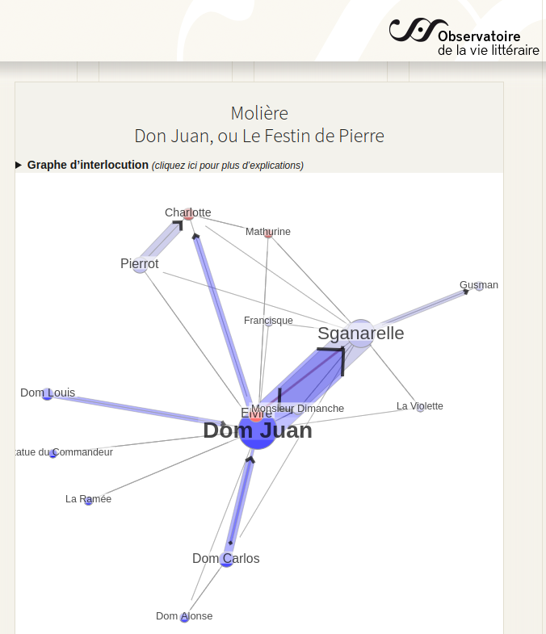

4 Frayages intellectuels : les étapes d’une pensée
4.1 De l’histoire de l’art aux sciences de l’information et de la communication
La chance de découvrir l’art de toute les époques et par là d’apprendre à voir par la pratique intensive des œuvres et leurs analyses complexes.
La gravure un modèle de diffusion à grande échelle et une première approche de l’histoire du goût à travers une exploration quali-quanti des catalogues de ventes
John Cage, la découverte du chaos et des processus de chance
Premières rencontres intellectuelles à la Tourette : Michel Serres, Regis Debray, l’histoire culturelle, les frères dominicains, la bibliothèque : Foucault…
L’intuition d’une machine à stimuler les connaissances par une mise en situation cinestésique…
Les premiers outils informatiques avec hypercard : le générateur automatique de philosophie
La rencontre avec Balpe et Imad et le travail sur les agents autonomes, l’influence de Descartes pour le voyage… premières expériences professionnelles
4.1.1 Evolution du projet de jardin des connaissances
Reprendre texte du bouquin avec modification
4.1.2 Théorisation des écosystèmes de connaissances
La démarche de thèse
les articles successifs autour de la modélisation des écosystèmes
comparaison des schémas depuis celui du jardin, puis du premier diagramme dans la thèse, celui des genres de connaissances, puis celui avec l’acteur en référence à Latour
Calculer la complexité d’un point de vue
4.2 Mise en pratique d’une méthode de modélisation et d’analyse de l’information et de la communication
4.2.0.1 Cours et ateliers
les expériences d’enseignement pour faire comprendre la notion complexe :
- exhaustivité VS problématiser
- la difficulté de choisir le statut de l’information
- le respect des contraintes graphiques
- a quoi ça sert ?
4.3 Projet de recherche en humanités numériques
- les bulletins diplomatiques de la sciences
- biolographes
- les données sur la poésie
- Aliento
- L’internet des objets
- l’évaluation des activités politiques
- SMEL
4.3.1 2019 – présent : ARCANES
Des arts trompeurs à la post-vérité : régimes d’authenticité en contexte numérique
Subvention CRSH – Savoir : 256 000 $
Le projet Arcanes comporte deux volets. Le premier volet explore les processus de production du sens, les filiations historiques et intermédiales ainsi que les dynamiques de médiation, tout comme les divers dispositifs et les processus d’éditorialisation dans le sillon des humanités et des cultures numériques.
Le deuxième volet interroge les puissances du faux, les mécanismes du leurre ainsi que les stratégies d’illusion tels qu’ils se manifestent dans les arts – que nous qualifions « d’arts trompeurs » -, la littérature, les pratiques médiatiques et l’écosystème socionumérique actuel.
https://crilcq.arcanes.ca/
4.3.2 2018 – 2021 : POLEMIKA
Génération automatique d’arguments pour l’éducation à l’esprit critique
Subvention Région Ile de France : 30 800 €
Subvention ArTec : 5 000 €
Ce projet de recherche vise à expérimenter des processus innovants de formation à l’esprit critique. Le premier volet dont nous devrions obtenir le financer par les “Trophées de l’innovation en Ile de France” se centre sur le développement informatique d’un générateur automatique d’arguments sous forme de Web App, qui sert d’interface d’interaction avec les utilisateurs, et de moyen de collecte de données sur les émotions suscitées par la génération des contre-propositions.
En articulation avec ce projet, l’objet du projet Polemik’Art financer par ArTec consiste à 1) concevoir des modalités d’interactions humaines et numériques avec des dispositifs de mise en scène du générateur d’arguments développé dans POLEMIKA, 2) étudier le rôle des émotions dans la réception de ces mises en scène de contre-propositions, 3) évaluer l’influence de la participation des publics sur l’évolution de leurs émotions. https://polemika.univ-paris8.fr/
4.3.3 2010 – 2013 : GEVU
Outil d’intelligence collective pour le diagnostic de l’accessibilité des bâtiments et des voiries
Contrat de recherche de l’université de Lille : 80 000 €
Ce travail de recherche interdisciplinaire inclut des approches de géographie, d’urbanisme, d’ergonomie, de science de l’information, de design d’information et de pédagogie. L’objectif commun consiste à développer, en partenariat avec un OPH, un outil d’intelligence collective pour le diagnostic de l’accessibilité des bâtiments et des voiries : GEVU. Les spécificités de cette application Web apportent des bénéfices certains aux acteurs du logement social notamment en terme de visualisation et d’analyse des territoires mais aussi concernant la communication entre les acteurs. Il nous a aussi permis de mettre en place des méthodes de modélisation des écosystèmes d’information et de confronter nos approches dans le cadre d’un atelier de conception coopérative, pour une conduite de projets en référence à l’homme..
4.3.4 Ateliers de littérature générative
« Revaz (2009) définit ainsi les propriétés communes à tous les récits :
- Une représentation d’actions,
- Un déroulement chronologique,
- Un enchaînement causal,
- Une transformation (renversement) entre l’état initial et l’état final,
- Un développement inhabituel ou non prévisible de l’action. »
- https://intelligibilite-numerique.numerev.com/manifeste
- Lire Ensemble
- cartographie deleuze
- biolographes
- Application développée spécifiquement pour le travail d’HDR.
- Pédagothèque Psy
- Ontostats
4.3.5 2019 – 2022 : LITTE_BOT
Le projet LITTE_BOT (Pappa et al., 2023; Quach et al., 2022) consiste en la création d’un chatbot théâtral incarnant Dom Juan à l’occasion du 400ème anniversaire de la naissance de Molière, présenté pour l’exposition “Molière, le jeu du vrai et du faux” que lui ont consacrée la BnF et la Comédie Française. fin 2022. A l’origine de ce projet, Rocio Berenguer, une dramaturge, s’est rapprochée de la BnF pour récupérer un corpus pour créer un chatbot littéraire. Le projet Gallica Studio, aujourd’hui terminé, encourageait la réutilisation des contenus de Gallica, dont la plupart sont dans le domaine public, tout en invitant à l’expérimentation de nouveaux usages rendus possibles par les technologies émergentes. En l’occurrence, explorer la médiation vocale rendue possible par les chatbots et expliquer cette technologie au grand public. En collaboration avec Anna Pappa, nous avons apporté notre expertise scientifique pour faire du chatbot une réalité, dans le cadre d’un appel à projets de l’EUR Artec.
L’objectif était de créer un chatbot ouvert capable d’incarner le Dom Juan de Molière. Le défi technique était de créer une base de données suffisamment grande pour entraîner le modèle de langage séquence à séquence. Les modèles linguistiques actuels sont formés avec des corpus contemporains. Pour notre projet, nous devions construire de toutes pièces une base de données qui permettrait à une intelligence artificielle d’imiter le Dom Juan de Molière, de parler le français du XVIIe siècle et de comprendre le français actuel parlé par son interlocuteur.
La base de données pour la formation du chatbot est non seulement indispensable, mais aussi la partie la plus importante de ce projet. Dans un premier temps, j’ai travaillé sur l’analyse sémantique du corpus Molière disponible sur Gallica grâce à un précédent partenariat de recherche entre la BnF et le laboratoire OBVIL de la Sorbonne. La mise à disposition de ce corpus des textes de Molière dans un format manipulable par des machines (https://obvil.sorbonne-universite.fr/corpus/moliere/moliere) permet d’envisager de multiple réutilisation de ces textes pour des usages innovants. Par exemple, l’Obvil analyse les relations entre les personnages d’une pièce de théâtre pour visualiser l’importance de leurs relations :

Pour ce projet nous avons analysé la structure du corpus (pièces de théâtre, actes, scènes, répliques, phrases, mots-clés) pour créer des éléments dans une base de données Omeka S correspondant à chacune de ces structures et à leurs relations. Pour ce faire nous avons développé un module générique 1 d’importation des pages HTML qui à partir d’un fichier de configuration2 sélectionne les éléments de la page et les enregistre dans la base Omeka S en détaillant leurs relations. Nous avons importer toutes 3 pour obtenir une base de plus de 100 000 items. Ce travail d’hypertrextualisation permet d’explorer la base de données et d’enrichir les éléments qui la compose et dont voici la représentation :
Nous souhaitions travailler précisément les répliques du théâtre de Molière afin de les rendre génératives en suivant le modèle des générateurs de Jean Pierre Balpe Section 4.3.4. et ainsi disposé d’un générateur automatique de répliques de Molière pouvant servir à l’entrainement du chatbot. Malheureusement, nous n’avons pas trouvé les ressources nécessaires pour faire ce travail en détail. Nous avons privilégié une approche plus rapide en indexant manuellement les répliques selon des étiquettes correspondant au scénario suivi par le chatbot. En réalité, LITTE_BOT combine deux chatbots : un chatbot ouvert basé sur le modèle Seq2Seq et un chatbot scénarisé, aux lignes indexées.
Cette pratique de la scénarisation des chabots reste aujourd’hui la plus répandue car elle permet de maîtriser précisément le processus de dialogue entre les utilisateurs et les bots. Comme le confirme les indexations manuelles par micro-tâches faites pour rendre ChatGPT opérationnel ou le chatbot Chomsky VS Comsky
Lien vers les sources du module : https://github.com/samszo/Omeka-S-module-Scraping↩︎
lien vers le fichier de configuration pour l’importation des pièces de Molière : https://github.com/samszo/Omeka-S-module-Scraping/blob/main/data/exemples/moliereParPiece.json↩︎
Lien vers les pièces importées :http://localhost/omk_moliere/s/theatre-de-moliere/item?resource_class_id%5B%5D=1017&sort_by=created&sort_order=desc&submit=Search↩︎